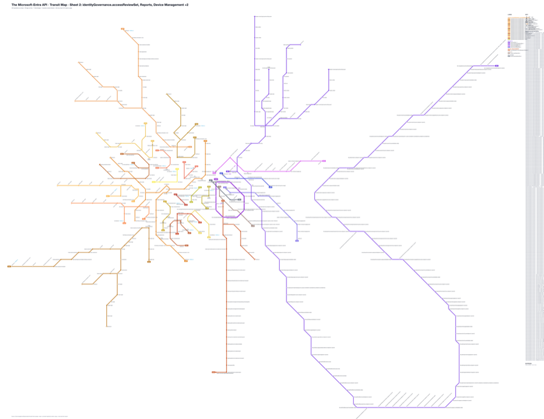
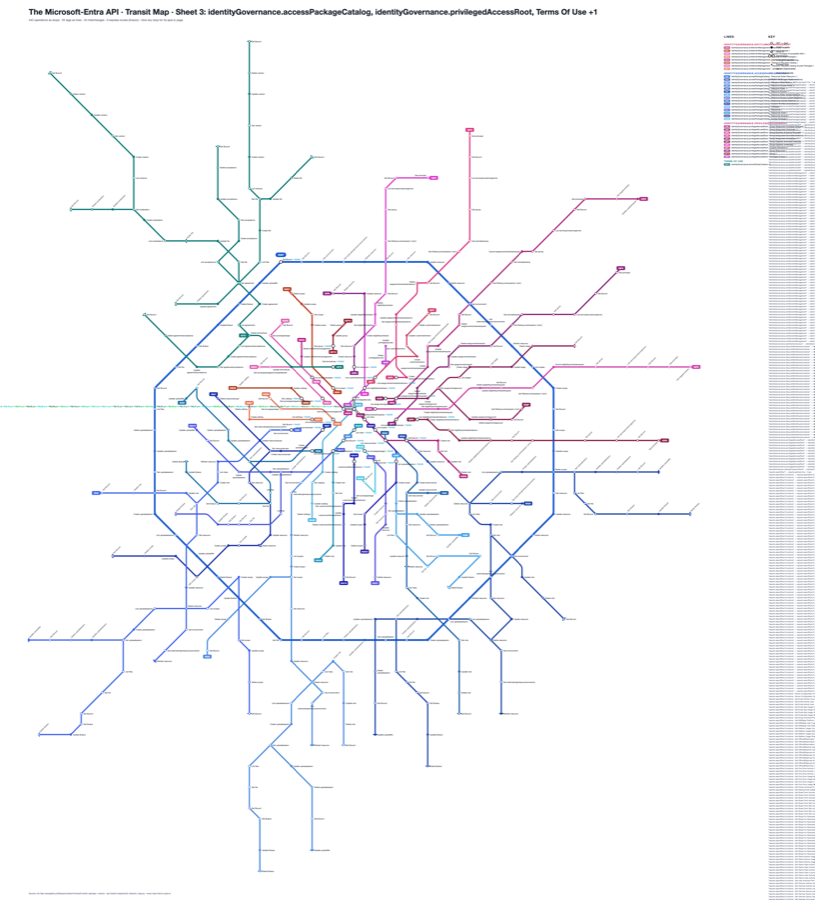
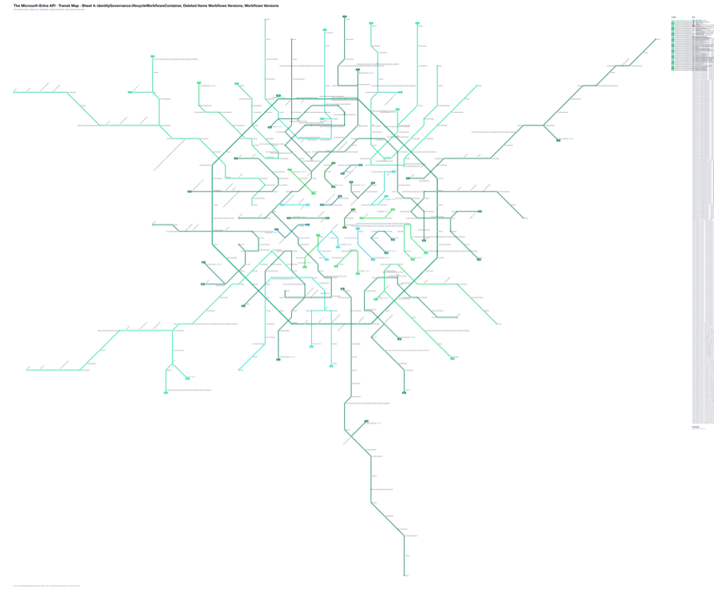
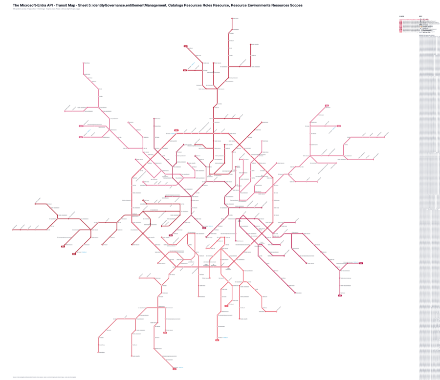
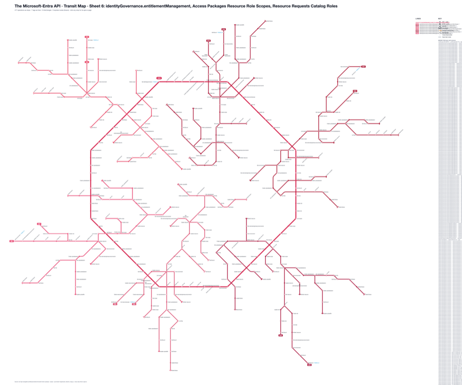
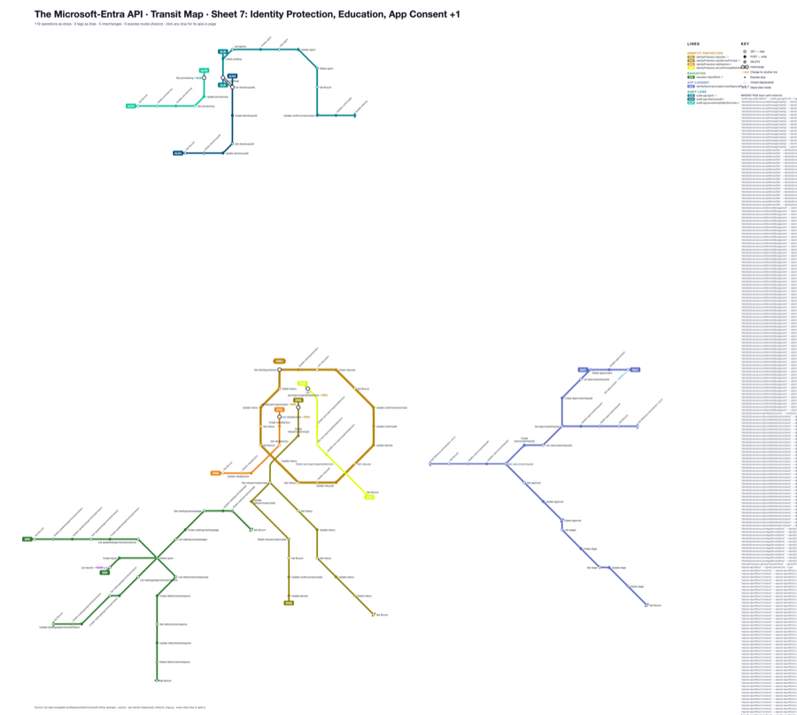

2728 operations on 7 sheets · products that interchange most share a sheet · on each sheet, "⇄CODE p.N" means change for that line on page N · every stop links to apis.io

p.1 identityGovernance.entitlementManagement, Catalogs Resource Scopes Roles, Resource Role Scopes Scope Roles
449 operations · 40 lines
- identityGovernance.entitlementManagement
Interchanges to p.3 (40)

p.2 identityGovernance.accessReviewSet, Reports, Device Management +2
448 operations · 26 lines
- identityGovernance.accessReviewSet
- Reports
- Device Management
- Copilot
- Solutions
Interchanges to p.3 (18), p.7 (1)

p.3 identityGovernance.accessPackageCatalog, identityGovernance.privilegedAccessRoot, Terms Of Use +1
442 operations · 35 lines
- identityGovernance.accessPackageCatalog
- identityGovernance.privilegedAccessRoot
- Terms Of Use
- identityGovernance.entitlementManagement
Interchanges to p.1 (40), p.2 (18), p.4 (35), p.5 (9), p.6 (7), p.7 (1)

p.4 identityGovernance.lifecycleWorkflowsContainer, Deleted Items Workflows Versions, Workflows Versions
433 operations · 35 lines
- identityGovernance.lifecycleWorkflowsContainer
Interchanges to p.3 (35)

p.5 identityGovernance.entitlementManagement, Catalogs Resources Roles Resource, Resource Environments Resources Scopes
420 operations · 9 lines
- identityGovernance.entitlementManagement
Interchanges to p.3 (9)

p.6 identityGovernance.entitlementManagement, Access Packages Resource Role Scopes, Resource Requests Catalog Roles
417 operations · 7 lines
- identityGovernance.entitlementManagement
Interchanges to p.3 (7)

p.7 Identity Protection, Education, App Consent +1
119 operations · 9 lines
- Identity Protection
- Education
- App Consent
- Audit Logs
Interchanges to p.2 (1), p.3 (1)